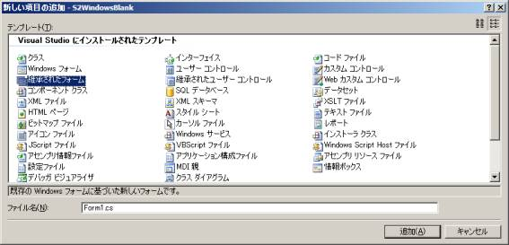
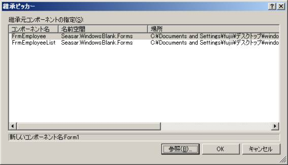
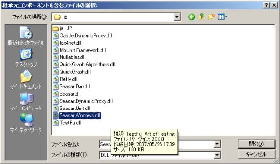
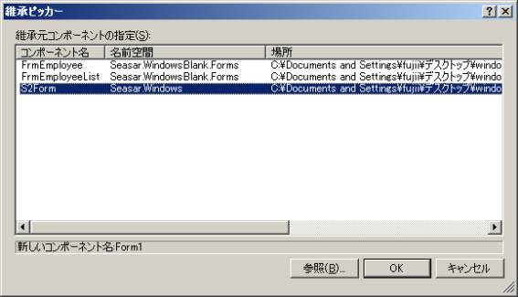

上へ
上へS2FormはS2Container.NET 1.3.0 からの機能です。 .NET Framework 2.0以上にのみ対応しています。


PONO(Plain Old .NET Object)オブジェクトを自動的にバインドするWindowsFormです。
PONOをS2FormのDataSourceプロパティにセットすると、PONOがコントロールに自動的にバインドされます。 コントロールに入力すると、バインドされたPONOの値が更新されます。ですので、DataSourceプロパティを使って、 PONOを更新した値で取得することができます。
S2Formを実際に使用するには、Seasar.Windows.S2Formを継承したWindowsFormを作ります。 Visual Studio2005上では次のように作成します。
新しい項目の追加から継承されたフォームを選択します。
次に、継承元とのDLLを選択します。次の画面で参照ボタンを押します。
Seasar.Windows.Dllを選択します。
すると次のように表示されるので、
S2Formを選択して、OKボタンを押します。
普通の開発のように、作成したWindowsFormの上にコントロールを作成します。 このコントロールの名前はPONOで つけやすい名前にしておくほうが良いでしょう。
コントロールの命名にハンガリアン記法を使っているとき、 あるいはコントロール名に修飾子をつけているがPONOのプロパティ名につけたくないときにはControlModifier属性を使用します。
ControlModifier属性は次のような仕様になっています。WindowsFormのクラス属性で、 一つ目の引数がコントロール名の前につける修飾子で、二つ目の引数がコントロール名の後につける修飾子です。
C#
[ControlModifier("txt", "")] public partial class FrmEmployeeList : S2Form { ... }
VB
<ControlModifier("txt", "")> _ Public Class FrmEmployeeList ... End Class
バインドするときに使用するコントロールのプロパティはTextです。これを持たないコントロールの場合はControl属性を 使用します。 また、修飾子の都合でプロパティと関係付けられないときに使用します。
| 名前 | 説明 |
|---|---|
| Control(controlName, controlProperty, propertyName) |
|
| Control(controlName, controlProperty, propertyName, updateMode) |
|
| Control(controlName, controlProperty, propertyName, formattingEnabled, updateMode, nullValue, formatString) |
|
バインドするプロパティの優先順位は、Control属性が先で、次にPONOのプロパティです。
C#
[ControlModifier("txt", "")] [Control("lblName", "Text", "Name")] public partial class FrmEmployeeList : S2Form { ... }
VB
<ControlModifier("txt", "")> _ <Control("lblName", "Text", "Name")> _ Public Class FrmEmployeeList ... End Class
コントロールの値の変更がPONOに反映されるタイミングはDataSourceUpdateMode#OnValidationがデフォルトです。 コントロールの値を即座に反映するように変更するときにはControl属性を次のように使用します。
C#
[ControlModifier("txt", "")] [Control("lblName", "Text", "Name", DataSourceUpdateMode.OnPropertyChanged)] public partial class FrmEmployeeList : S2Form { ... }
VB
<ControlModifier("txt", "")> _ <Control("lblName", "Text", "Name", DataSourceUpdateMode.OnPropertyChanged)> _ Public Class FrmEmployeeList ... End Class
S2FormのDataSourceプロパティを使用します。
PONOをセットする
C#
EmployeeListDto data = _service.GetAll(); this.DataSource = data;
VB
Dim data As EmployeeListDto = _service.GetAll(); Me.DataSource = data;
PONOを取得する
C#
EmployeeListDto data = (EmployeeListDto)this.DataSource;
VB
Dim data As EmployeeListDto = CType(Me.DataSource, EmployeeListDto)
二つの方法があり、一つ目の方法はもう一度PONOをバインドすることです。 二つ目の方法はバインドしたPONOを変更した後、 S2FormのReadValuesメソッドを実行します。
((EmployeeListDto) this.DataSource).Code = "0001"; this.ReadValues();
逆に、コントロールの値をバインドしているPONOに強制的に書き出すメソッドとしてWriteValuesメソッドを用意しています。 通常は必要としないと思います。
現在、DataGridViewとSPREAD2.5Jで動作確認しています。
Gridタイプのコントロールにバインドする場合、バインドさせるPONOにIList、ジェネリックIList、配列、 DataTable、IEnumerable、ジェネリックIEnumerableのプロパティを持たせます。 そのプロパティをControl属性で設定します。 設定先は一般的にはGridコントロールのDataSourceプロパティになります。
Gridタイプコントロールのプロパティに格納するコレクションに含めるPONOは別に設定します。 こちらの 自動バインディングには対応していません。 一部のコンポーネントはバインドすると列サイズが変わることがあり、それを元のサイズに設定し直す処理を 含める必要があります。 同様に、列の自動生成がデフォルトで行われる場合があり、停止する必要があります。
[ControlModifier("txt", "")] [Control("lblName", "Text", "Name")] [Control("sprList", "DataSource", "List")] public partial class FrmEmployeeList : S2Form { ... }
上記の例では、二つ目のControl属性([Control("sprList", "DataSource", "List")])でセットしています。
行を挿入する
バインドしていると、Gridコントロールのメソッドを使って行を挿入することができません。 そこでS2FormのAddRowメソッドを使って、挿入します。
| 名前 | 説明 |
|---|---|
| AddRow(propertyName, data, row) |
|
行を削除する
行の挿入と同様に、バインドしているとGridコントロールのメソッドを使って行を削除することが できません。 そこでS2FormのDeleteRowメソッドを使って、削除します。 複数の行を削除するときはDeleteRowsメソッドを使用します。
| 名前 | 説明 |
|---|---|
| DeleteRow(propertyName, row) |
|
| DeleteRows(propertyName, startRow, endRow) |
|
行を移動させる
一つ行を移動させる処理を行うには、行の追加や削除と同様にGridコントロールのメソッドを使って行うことはバインドしている限りできません。 そこで行を一つあげるときはMoveUpRowメソッドを使います。行を一つ下げる ときにはMoveDownRowメソッドを使います。
| 名前 | 説明 |
|---|---|
| MoveUpRow(propertyName, row) |
|
| MoveDownRow(propertyName, row) |
|
© Copyright The Seasar Project and the others 2004-2013, all rights reserved.